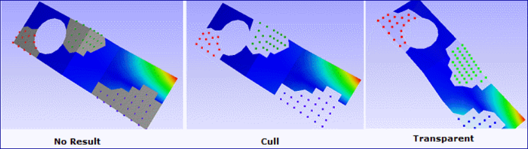
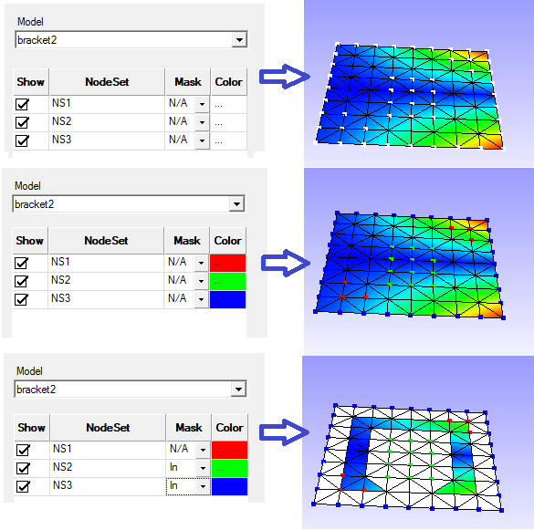
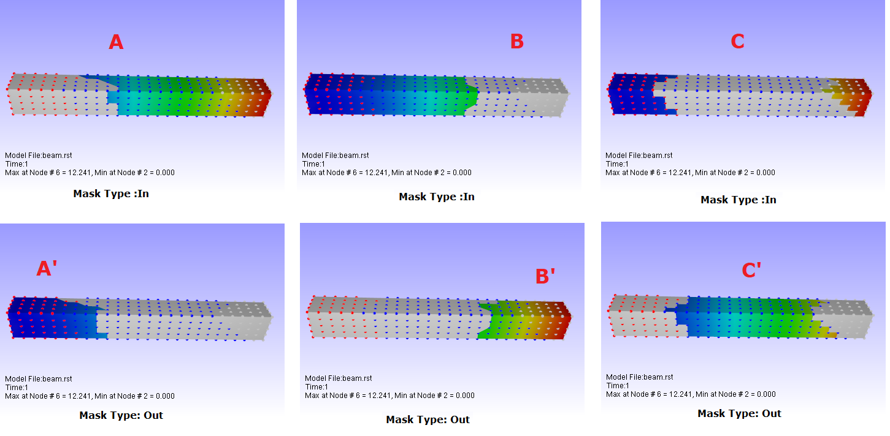

Node Set Manager
VCollab Presenter users can group a set of nodes and use it in other functional modules using the Node Set Manager option under CAE menu. This reduces significant time in selection of nodes for different purposes.
Node Set : A Node Set is a group of nodes having a name given by the user.
A Node set can be used in
- masking color plot
- vector plot
- XYPlot
- Hotpot finder
Node Set Manager Panel
Click CAE|Node Set Manager to open the panel as shown below. There are two tabs , Creator tab and Manager tab
Creator Panel
The various fields and options in the Creator tab are explained below.
| Using Mouse Selection | |
| Rectangle | Select nodes within a rectangular window drawn by the mouse |
| Point | Select individual nodes by picking |
| Polygon | Select nodes within a polygonal window drawn by the mouse |
| Visible Surface | Ignore hidden nodes for selection |
| Using Probe Labels | |
| Add Probe Labels | Select probed nodes. |
| Visible Probe Labels | Ignore hidden label nodes. |
| Using Selected Parts | |
| Selection Constraint | Users can choose any one of the following options.
|
| Get Nodes | Gets filtered nodes according to the selected constraint. |
| From Selected Nodes: Neighbourhood | |
| Replace Current | Clears existing nodes and considers new neighborhood or proximity nodes. |
| Get Adjacent Nodes | Appends imJPGImageste adjacent nodes of current nodes. |
| Range | Proximity radius value for selecting Node or element. |
| Element Proximity | A On/Off switch for Element or nodal proximity. |
| Get Proximity Nodes | Appends all the nodes within the proximity range. |
| Node set | Name of the new node set. |
| Create | Creates a new node set with name provided and displays the final nodes. |
| Clear | Clears displayed nodes. |
Manager Panel
The various fields available in the Manager tab are explained below.
| Model | Selects a CAE Model |
| List Box | Lists all node set names corresponding to the model |
| Show | Check/Uncheck to show/hide |
| Node set | Node set name mask for hotspot finder or color plot |
| Mask Type | Allows user to select mask type. (Inside or Outside or None are the types) |
| Color | Display color of the node set |
| Color Mask | Masking the node sets in contour. |
| Hotspot Mask | Masking the node sets in finding hotspots. |
| Edit | Allows user to edit the nodeset. |
| Delete | Delete all selected node sets. |
Types of Color Mask
VCollab provides following types in color masking.
- None - No masking
- No Result - Masking region will be in ‘No Result’ color
- Cull - Masking region will be culled
- Transparent - Masking region will be semi transparent.

Steps to create a Node Set
Selection of Nodes
Click CAE | NodeSet Manager… menu item, which pops up a dialog.
Click a mouse selection mode, Rectangle / Point / Polygon.
Rectangle mode
Use left mouse button to drag a window to select nodes.
Use right mouse button to drag window to deselect nodes.
Point mode
- Click on a node directly to select it.
- Click a selected node with the middle button to deselect it.
Polygon mode
- Left click start defining a polygon.
- Click points on the screen to build a polygon.
- Right click to close the polygon.
- The selected nodes are displayed in the viewer.
- Use the Visible Surface option to filter hidden nodes in the current view.
Box
Use left mouse to click and drag to define a box.
Each bound plane can be moved in or out using mouse click and drag.
Click the box button again to select nodes within the box. Box will dissappear and nodes will be highlighted.
Appending Nodes from selected parts
Select parts before using this option.
Select
All Nodes to get all the nodes from the selected parts.
Connected Element Nodes to get nodes from the elements which connect selected parts and other parts.
All and Connected Element Nodes to get all nodes from selected part and connected element parts.
Edge Nodes to get nodes on the feature edges of selected parts. This depends on feature edge crease angle too.
Edge Element Nodes to get nodes from the elements of which has at least one feature edge.
Click Get Nodes to append the nodes.


Appending Nodes from probe
- Click the Add Probe Labels button to include all probed nodes.
- Select Visible Probe Labels option to ignore hidden probe label nodes.
Appending or Replacing selection using ‘From Selected Nodes : Neighbourhood’
Click the Get Adjacent Nodes button to find adjacent nodes of selected nodes.
Use Proximity Range to find nodes which falls within a given range of selected nodes.( i.e. Nodal Proximity)
Select Element Proximity to find nodes which fall within a given range of elements (associated with selected nodes).
Click Get Proximity Nodes to append the selection of nodes.
Click Replace Current option to replace the selection instead of appending.
Clearing the selection
- Click Clear to clear the current selection of nodes.
Creating Node Set
- Provide a unique name to the selection of nodes (node set) in the text box given
- Click Create to create a node set whose name will be added to the list in the manager tab.
Steps to manage Node Set list
- Created Node Sets as explained above.
- Click CAE | NodeSet Manager… to open the NodeSet Manager panel.
- Select Manager tab.
- Select the CAE model for which node sets need to be managed
- Select a node set name.
Editing Node Set
- Click Edit to
- modify the nodes in the set.
- Clear and build new node set, Or
- Filter nodes by removing nodes.
Deleting Node Sets
- Select a Node Set to be removed.
- Click Delete.
Toggling Node Set Attributes
Click the Show check box in the Node Set list box to turn On / Off its visibility.
Click the Mask check box in the Node Set list box to mask / unmask color plot for those nodes.
Click Color cell to edit display color of the nodes.
N/A refers to ‘No Masking’
It refers to include in masking.
Out refers to excluding from masking.
Click Color cell to edit display color of the nodes.
Click Mask check box in the bottom of dialog to mask / unmask the color plot for those nodes.

Combination of In and Out masked Nodesets
Nodeset A with In mask type is refered as A Nodeset A with Out mask type is refered as A’


Node Sets in Hotspot Finder
Open Hotspot Finder Settings tab under CAE Settings
Click Mask…to open the dialog below where one can select or deselect Node Sets.
- Masking is not supported for Elemental Result.
- Users can select multiple Node Sets for masking during hotspot finding operation.
Steps for creating a nodeset from the result range
Open Nodeset Manager dialog.
Click Creator tab
Click the From Result Range… button to open the dialog box as shown below
Select the required Result, Instance and Derived scalar result.
Check Min and Max check boxes and edit their values
Click OK
Nodes within the result range will be highlighted in the viewer.
Click the Create button to create the nodeset.